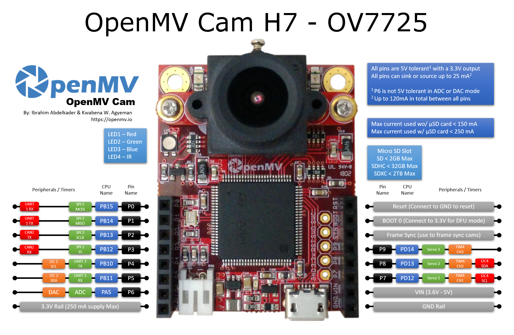
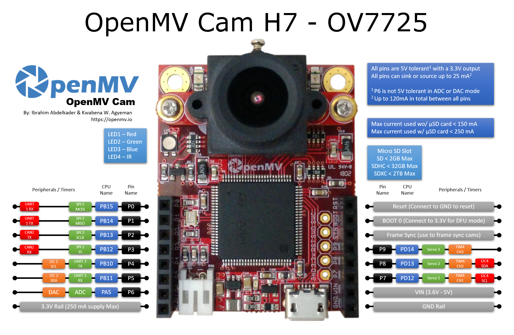
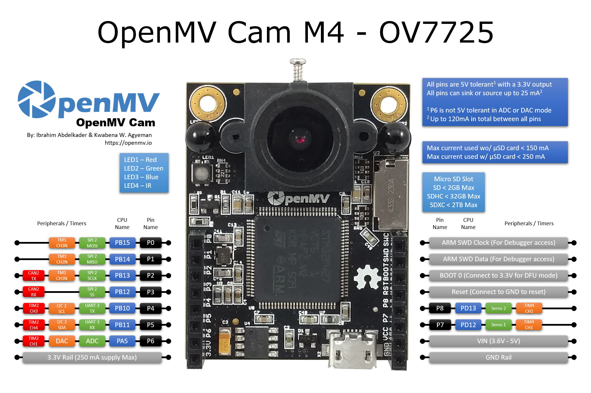
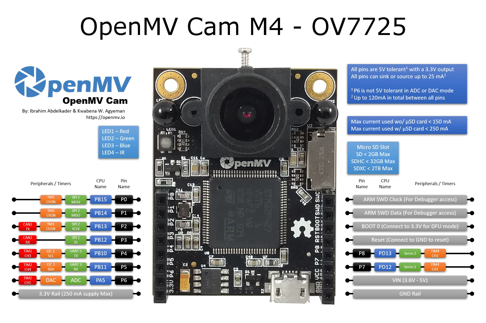

Quick reference for the openmvcam¶
Below is a quick reference for the OpenMV Cam. If it is your first time working with the OpenMV Cam please consider reading the following sections first:
 

{kind=link}
 

{kind=link}

General board control¶
See pyb.
import pyb
pyb.repl_uart(pyb.UART(3, 9600, timeout_char=1000)) # duplicate REPL on UART(3)
pyb.wfi() # pause CPU, waiting for interrupt
pyb.stop() # stop CPU, waiting for external interrupt
Delay and timing¶
Use the time module:
import utime
utime.sleep(1) # sleep for 1 second
utime.sleep_ms(500) # sleep for 500 milliseconds
utime.sleep_us(10) # sleep for 10 microseconds
start = utime.ticks_ms() # get value of millisecond counter
delta = utime.ticks_diff(utime.ticks_ms(), start) # compute time difference
LEDs¶
See pyb.LED.
from pyb import LED
led = LED(1) # red led
led.toggle()
led.on()
led.off()
LED Pinout:
LED(1) -> Red RGB LED Segment
LED(2) -> Green RGB LED Segment
LED(3) -> Blue RGB LED Segment
LED(4) -> IR LEDs
Pins and GPIO¶
See pyb.Pin.
from pyb import Pin
p_out = Pin('P7', Pin.OUT_PP)
p_out.high()
p_out.low()
p_in = Pin('P8', Pin.IN, Pin.PULL_UP)
p_in.value() # get value, 0 or 1
GPIO Pinout:
Pin(‘P0’) -> P0 (PB15)
Pin(‘P1’) -> P1 (PB14)
Pin(‘P2’) -> P2 (PB13)
Pin(‘P3’) -> P3 (PB12)
Pin(‘P4’) -> P4 (PB10)
Pin(‘P5’) -> P5 (PB11)
Pin(‘P6’) -> P6 (PA5)
Pin(‘P7’) -> P7 (PD12)
Pin(‘P8’) -> P8 (PD13)
Pin(‘P9’) -> P9 (PD14) (OpenMV Cam M7/H7 Only)
All pins are 5V tolerant with a 3.3V output (P6 is not 5V tolerant in ADC or DAC mode).
All pins can sink or source up to 25 mA (Up to 120 mA in total between all pins).
Servo control¶
See pyb.Servo.
from pyb import Servo
s1 = Servo(1) # servo on position 1 (P7)
s1.angle(45) # move to 45 degrees
s1.angle(-60, 1500) # move to -60 degrees in 1500ms
s1.speed(50) # for continuous rotation servos
Servo Pinout:
Servo(1) -> P7 (PD12)
Servo(2) -> P8 (PD13)
Servo(3) -> P9 (PD14) (OpenMV Cam M7/H7 Only - Not OpenMV Cam H7 Plus)
External interrupts¶
See pyb.ExtInt.
from pyb import Pin, ExtInt
callback = lambda e: print("intr")
ext = ExtInt(Pin('P7'), ExtInt.IRQ_RISING, Pin.PULL_NONE, callback)
GPIO Pinout:
Pin(‘P0’) -> P0 (PB15)
Pin(‘P1’) -> P1 (PB14)
Pin(‘P2’) -> P2 (PB13)
Pin(‘P3’) -> P3 (PB12)
Pin(‘P4’) -> P4 (PB10)
Pin(‘P5’) -> P5 (PB11)
Pin(‘P6’) -> P6 (PA5)
Pin(‘P7’) -> P7 (PD12)
Pin(‘P8’) -> P8 (PD13)
Pin(‘P9’) -> P9 (PD14) (OpenMV Cam M7/H7 Only)
Timers¶
See pyb.Timer.
from pyb import Timer
tim = Timer(2, freq=1000)
tim.counter() # get counter value
tim.freq(0.5) # 0.5 Hz
tim.callback(lambda t: pyb.LED(1).toggle())
For OpenMV Cam M4: TIM2, TIM3, and TIM4
For OpenMV Cam F7: TIM2, TIM3, TIM4 and TIM7 through TIM14
For OpenMV Cam H7: TIM2, TIM3, TIM4, TIM7, TIM8 and TIM12 through TIM17
Timer Pinout:
Timer 1 Channel 3 Negative -> P0 (PB15)
Timer 1 Channel 2 Negative -> P1 (PB14)
Timer 1 Channel 1 Negative -> P2 (PB13)
Timer 2 Channel 3 Positive -> P4 (PB10)
Timer 2 Channel 4 Positive -> P5 (PB11)
Timer 2 Channel 1 Positive -> P6 (PA5)
Timer 4 Channel 1 Negative -> P7 (PD12)
Timer 4 Channel 2 Negative -> P8 (PD13)
Timer 4 Channel 3 Positive -> P9 (PD14) (OpenMV Cam M7/H7 Only - Not OpenMV Cam H7 Plus)
PWM (pulse width modulation)¶
from pyb import Pin, Timer
p = Pin('P4') # P4 has TIM2, CH3
tim = Timer(2, freq=1000)
ch = tim.channel(3, Timer.PWM, pin=p)
ch.pulse_width_percent(50)
For OpenMV Cam M4: TIM2, TIM3, and TIM4
For OpenMV Cam F7: TIM2, TIM3, TIM4 and TIM7 through TIM14
For OpenMV Cam H7: TIM2, TIM3, TIM4, TIM7, TIM8 and TIM12 through TIM17
Timer Pinout:
Timer 1 Channel 3 Negative -> P0 (PB15)
Timer 1 Channel 2 Negative -> P1 (PB14)
Timer 1 Channel 1 Negative -> P2 (PB13)
Timer 2 Channel 3 Positive -> P4 (PB10)
Timer 2 Channel 4 Positive -> P5 (PB11)
Timer 2 Channel 1 Positive -> P6 (PA5)
Timer 4 Channel 1 Negative -> P7 (PD12)
Timer 4 Channel 2 Negative -> P8 (PD13)
Timer 4 Channel 3 Positive -> P9 (PD14) (OpenMV Cam M7/H7 Only - Not OpenMV Cam H7 Plus)
ADC (analog to digital conversion)¶
from pyb import Pin, ADC
adc = ADC(Pin('P6'))
adc.read() # read value, 0-4095
ADC Pinout:
ADC(Pin(‘P6’)) -> P6 (PA5)
P6 is 3.3V tolerant in ADC mode - NOT 5V TOLERANT!
DAC (digital to analog conversion)¶
from pyb import Pin, DAC
dac = DAC('P6')
dac.write(120) # output between 0 and 255
DAC Pinout:
DAC(Pin(‘P6’)) -> P6 (PA5)
P6 is 3.3V tolerant in DAC mode - NOT 5V TOLERANT!
UART (serial bus)¶
See pyb.UART.
from pyb import UART
uart = UART(3, 9600, timeout_char=1000)
uart.write('hello')
uart.read(5) # read up to 5 bytes
UART Pinout:
UART 3 RX -> P5 (PB11)
UART 3 TX -> P4 (PB10)
UART 1 RX -> P0 (PB15) (OpenMV Cam M7/H7 Only)
UART 1 TX -> P1 (PB14) (OpenMV Cam M7/H7 Only)
SPI bus¶
See pyb.SPI.
from pyb import SPI
spi = SPI(2, SPI.MASTER, baudrate=1000000, polarity=1, phase=0)
spi.send('hello')
spi.recv(5) # receive 5 bytes on the bus
spi.send_recv('hello') # send a receive 5 bytes
SPI Pinout:
SPI 2 MOSI (Master-Out-Slave-In) -> P0 (PB15)
SPI 2 MISO (Master-In-Slave-Out) -> P1 (PB14)
SPI 2 SCLK (Serial Clock) -> P2 (PB13)
SPI 2 SS (Serial Select) -> P3 (PB12)
I2C bus¶
See pyb.I2C.
from pyb import I2C
i2c = I2C(2, I2C.MASTER, baudrate=100000)
i2c.scan() # returns list of slave addresses
i2c.send('hello', 0x42) # send 5 bytes to slave with address 0x42
i2c.recv(5, 0x42) # receive 5 bytes from slave
i2c.mem_read(2, 0x42, 0x10) # read 2 bytes from slave 0x42, slave memory 0x10
i2c.mem_write('xy', 0x42, 0x10) # write 2 bytes to slave 0x42, slave memory 0x10
I2C Pinout:
I2C 2 SCL (Serial Clock) -> P4 (PB10)
I2C 2 SDA (Serial Data) -> P5 (PB11)
I2C 4 SCL (Serial Clock) -> P7 (PD13) (OpenMV Cam M7/H7 Only)
I2C 4 SDA (Serial Data) -> P8 (PD12) (OpenMV Cam M7/H7 Only)